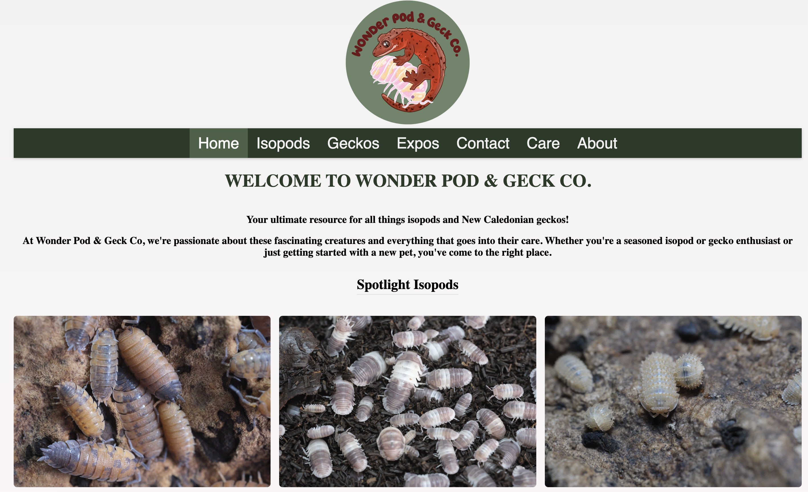
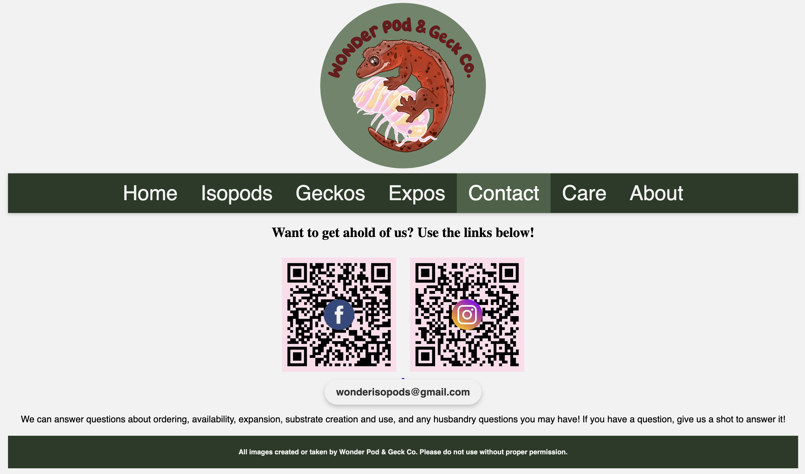

Project overview
I created WonderIsopods.com, a website for an exotic isopod breeding and sales business. It brings product information, care guides, and contact details together in one place for hobbyists and collectors.
Highlights
- Responsive page layout and clear site navigation.
- Product listings and species care information.
- Contact information for customer inquiries.
- Visual styling and branding tailored to the subject of the site.
Website screenshots


Feature walkthrough

Tools and techniques
- HTML and CSS: page structure and visual design.
- JavaScript: interactive website behavior.
- Bootstrap 5: responsive layout and reusable interface styles.
- Branding and graphic design: creating a consistent visual identity for the site.
What I learned
This project gave me experience taking a website from its structure and styling through to the content and visual presentation. It also let me practice designing around the needs of a real audience: people looking for products, care information, or a way to get in touch.